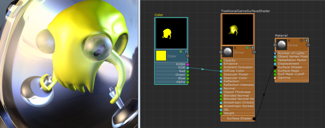
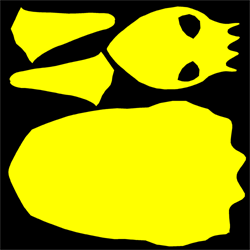

以下工作流同时适用于“Shaderfx 着色器”(Shaderfx Shader)图表和 Stingray PBS 图表。
您可以将 ShaderFX 图形中的任何预览样例烘焙到平坦的 2Kx2K 纹理。此外，您还可以将几何体的展开 UV 烘焙到纹理。
将预览样例烘焙到纹理
将预览样例保存至平坦的方形 2kx2k 纹理
- 选择包含要烘焙的预览样例的节点。
- 单击鼠标右键，然后选择“工具 > 将选定样例保存至图像”(Tools > Save Selected Swatches to Images)。
要烘焙到一个更大的样例，请结合使用 shaderfx MEL 命令与 -renderSwatchToDisk 标志。
将几何体渲染到 ShaderFX 样例中
在 ShaderFX 样例中可视化视口几何体
- 在场景视图中选择几何体。
- 单击鼠标右键 (
 )，然后选择“工具 > 设置样例几何体”(Tools > Set Swatch Geometry)。
)，然后选择“工具 > 设置样例几何体”(Tools > Set Swatch Geometry)。

如果旋转摄影机，则必须在面板菜单中选择“视图 > 选择摄影机”(View > Select Camera)，然后在 ShaderFX 标记菜单中选择“工具 > 设置样例摄影机”(Tools > Set Swatch Camera)更新 ShaderFX 中的样例。
将 UV 展开图像烘焙到纹理
- 选择包含要烘焙的预览样例的节点。
- 单击鼠标右键，然后选择“工具 > 将选定样例保存至已展开 UV 的图像”(Tools > Save Selected Swatches to UV-unwrapped Image)。
选择“工具 > 将选定样例保存至已展开 UV 的图像”(Tools > Save Selected Swatches to UV-unwrapped Image)。
几何体的展开 UV 将烘焙到该文件。
注： “TraditionalGameSurfaceShader”将会烘焙所有照明，因此未被照亮的面会在烘焙结果中显示为黑色。

应用程序
您可以混合昂贵的噪波和图案，然后烘焙并将其导出到游戏引擎。通过 ShaderFX 可以缝合节点，在 Viewport 2.0 中实时预览它们，然后为对象烘焙基于 UV 的纹理。